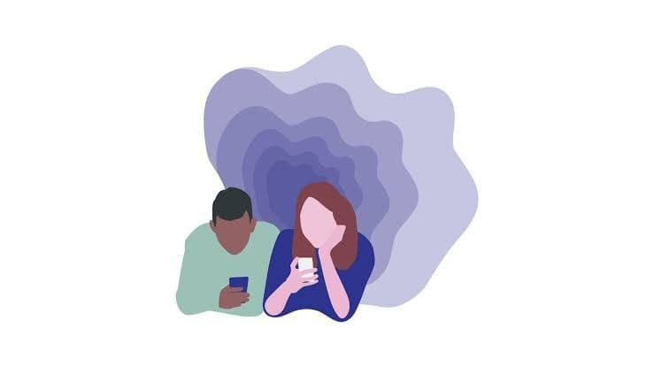

I know I should remember the first time I pulled out my hair and ate it, but I don't. It happened gradually, and I didn't realise it was a problem until it was a deeply ingrained habit. My picking disorder started sometime during university, and, now - almost 10 years later - Im still struggling. To anyone reading this who shares my experience, I’m here to tell you: you’re not alone; this is not just a bad habit that you’re too weak-willed to break; and there is treatment available for you. In fact, according to The American Journal of Psychiatry, 63% of people engage in some form of picking
When I was a kid, adults berated me for biting my fingernails. They told me it was just a bad habit that I needed to break, but, for me, this bad habit transformed into a life-altering disorder.In 2012, I started my first year of college. Alone and stressed, overloaded by work, and trying to navigate US university, I remember struggling to study through tears of fatigue and stress.
On one of these late nights, I pulled out a strand of hair and ate it.
At first, I thought I was just a fidgety, nervous person. I picked most often while stationary, while reading, watching TV, or driving in my car. I saw it as an unattractive quality in myself. I just needed to try harder, do better, exert some willpower to beat this bad habit. I learned to control it, but only in front of others. My embarrassment at pulling out my hair and eating it in public would overcome the urge to pick, but I couldn’t take that willpower and apply it when I was alone. This only made me more frustrated. I had control over it - but I didn't. It was obviously a flaw in my character, and I started hating myself.

I didn’t see it as a real problem until, around 2014, I started having gastrointestinal problems. Doing a little research, I read that I could develop an intestinal blockage, like a clogged drain inside my body. Others with trichotillomania (hair-pulling disorder) had developed blockages so bad they had to have surgery.
Instead of seeking treatment, I began cutting the strands into smaller pieces with my teeth. This did help my stomach, but the pieces would get stuck in my teeth and gums and make for awkward dentist visits.
After graduating in 2016, struggling to find a job and unsure of my future, I stopped plucking out single strands and began ripping out whole clumps.
I would rip and tear until my scalp was sore, and I got scared that my hair would never grow back. I thought of shaving my head – make myself bald so I won’t make myself bald doesn’t make a lot of sense, I know.
I developed a bald spot and styled a comb-over to hide it. I stopped visiting salons, terrified of being judged, and started cutting my own hair.
I couldn’t explain myself. Picking is an unconscious behaviour. I don’t know why I do it, because I don’t realise I’m doing it. When I become aware that I am picking, I think: “I don’t want to do this; why am I doing this; just stop.” But it’s like my hands have a mind of their own.
For months, I would find some way to stop and think I had beaten it. My hair grew back and my skin scarred over. I felt elated that this problem was finally in the past. But during periods of high stress, less than 20 minutes would leave me balding and sore, shameful, hopeless, and depressed all over again.
To struggle with an issue for years without making progress or getting resolution, is exhausting. And a picking disorder is hard to talk about because it’s embarrassing
I am writing this article because I want to connect with others who can relate, and to share some of the things I’ve learnt:
- Don’t let it start. Often, if I can stop myself before I pull out the first hair, I can avoid a total rampage.
- Put on a hat or gloves to make the area inaccessible.
- Take a shower or wet your hair. The texture change can inhibit picking.
- Stop whatever you’re doing, and do something active with your hands or body.
- Pick where it hurts. Pulling strands from the nape of my neck, where the hair is finer, so less satisfying and more painful, can often get me to stop.
- Get rid of the magnifying mirror, and even the tweezers and pins, if you use them during your picking behaviour.
- Find something to occupy your hands, like putty or clay, a worry stone, a stress ball, a piece of Lego, a Rubik’s cube, a sequined pillow, or a fidget-spinner.
- Apply some conditioning. Positive punishment has actually been effective for me. Wearing a small rubber band on my wrist, I flick it whenever I find myself about to begin picking. It doesn’t hurt, but it’s enough to help train my mind to associate picking, not with stress relief, but with a small shock.
- Talk about it. Often, people with picking disorders have a relative with a similar problem. I found out my mother has a milder issue where she picks at the skin on her chin, or scratches her scalp. Talking to her has made me feel less embarrassed about the problem, which has made it easier to deal with.
- See a professional. Often picking disorders align with other psychological issues, like depression, anxiety, or body dysmorphic disorder.
Treatment for a picking disorder, or for an overlapping disorder, is effective; it’s just rare because we’re too embarrassed to go, or we don’t think there is treatment available for us – but there are medications and therapies that can help.
Also, picking can have side-effects like infection, or intestinal blockages, or it might point to a developmental issue, so seeking treatment now could prevent more serious, even life-threatening, issues later.
Although I’m currently seeing a therapist for my picking, I know I will struggle with it for the rest of my life. But I know I’m not alone. I know a psychological disorder is nothing to be ashamed of. It’s not just a bad behaviour that I can’t break because I have weak willpower, and I’ve stopped hating myself for it. And, honestly, that has been enough for me to stop focusing my life around my picking, start appreciating my many good qualities, and live a healthier life.